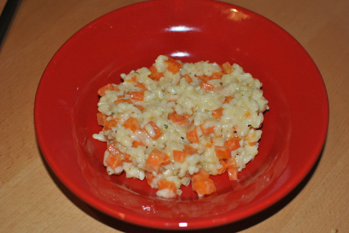

Möhrenrisotto

- Zubereitung: ca. 20 Minuten
- Für 4 Personen
Zutaten
- 800 ml Gemüsebrühe
- 500 g Möhren
- 3 Zwiebeln
- 1 Knoblauchzehe
- 2 EL Olivenöl
- 350 g Rundkornreis
- 50 g Parmesan
- 1 Bund Kerbel
- 100 g Sahne
Zubereitung
- Die Gemüsebrühe in einem Topf erhitzen und leicht kochen lassen.
- Die Möhren schälen und in kleine Würfel schneiden. Die Zwiebeln und den Knoblauch schälen und fein hacken. In einem großen Topf die Zwiebeln und den Knoblauch im heißen Öl andünsten, die Möhren hinzufügen und kurz mitdünsten.
- Dann den Reis hinzugeben, kurz anbraten und mit etwas kochender Gemüsebrühe ablöschen. Innerhalb von etwa 15 Minuten bei mittlerer Hitze garen, dabei nach und nach die Brühe zugießen und gelegentlich umrühren.
- Den Parmesan reiben, Kerbel waschen, trocken schütteln und hacken. Mit der Sahne unter das Risotto heben und mit Salz und Pfeffer abschmecken.